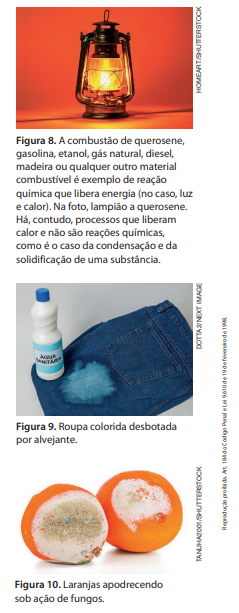
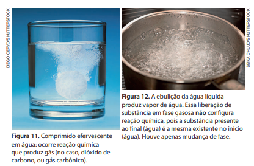

Tipos de Reações Químicas
Para saber se houve uma reação química, é necessário comparar as propriedades das substâncias presentes
nas situações
inicial e final. Considere, por
exemplo, que uma lata de alumínio vazia seja amassada. A substância inicialmente presente,
alumínio,
possui exatamente as mesmas propriedades da
substância existente no final, que também é alumínio. Como amassar
a lata não
acarretou a formação de novas substâncias, esse fenômeno não é uma reação
química (podendo ser denominado
transformação física). Quando um objeto
cai, uma folha de papel é rasgada, uma porção de areia é misturada à água,
um giz é
esmagado até virar pó e um prego é fincado na madeira, estamos
diante de outros exemplos que não são reações químicas.
Certificar -se de que uma reação química ocorreu nem sempre é simples.
Às vezes, só é possível em laboratórios
adequadamente equipados para
separar componentes das misturas obtidas e determinar suas propriedades.
Há algumas
evidências que podem estar associadas à ocorrência de reações
químicas, mas nem sempre estão. Consideremos alguns
exemplos relevantes:
- Liberação de calor: as combustões são reações químicas e, quando ocorrem,
há liberação de calor (Fig. 8). Contudo,
quando vapor de água condensa ou água líquida solidifica, também há liberação de calor pela água, e esses processos
são transições de fase, não reações químicas.
- Mudança de cor: quando um alvejante é derrubado em uma roupa colorida, há uma reação química que
transforma o
corante da roupa em uma substância incolor ou de coloração diferente da inicial (Figura 9). Contudo, se misturarmos tinta
azul e tinta amarela, veremos a coloração verde, mas não há reação química entre as tintas, apenas sobreposição
de suas cores.
- Mudança de odor: quando frutas, carnes e outros alimentos apodrecem,
ocorrem reações químicas em que substâncias
presentes nos alimentos se transformam em outras, de odor diferente do original (Figura 10). No entanto, quando você
destampa um frasco de perfume, sente um odor não porque tenha havido reação química; aconteceu evaporação de
parte do perfume, e o vapor chegou até o interior do seu nariz.
- Liberação de gás: ao jogar um comprimido efervescente em água, há uma
reação química que produz gás carbônico
(Fig. 11). Por outro lado, quando acontece a ebulição de uma substância, formam -se bolhas de vapor, mas não ocorre
reação, e sim mudança de fase (Fig. 12).

Exercícios
1. Quando uma folha de papel queima, diz-se que está acontecendo uma reação química. Já quando uma folha de papel é rasgada, não está ocorrendo reação química. Explique a razão para a diferente classificação de ambos os processos.
2. Que motivos levam os químicos a classificar a deterioração dos alimentos como sendo uma reação química e o derretimento de um pedaço de gelo como não sendo uma reação química?
3. A obtenção do metal ferro a partir do minério de ferro chamado hematita é realizada nas indústrias siderúrgicas. Uma reação química que ocorre em fornos apropriados, nessas indústrias, pode ser assim equacionada:
hematita + monóxido de carbono → ferro + dióxido de carbono
Sobre esse processo e sua representação, responda:
- a. Qual é o significado dos sinais de mais (+)?
- b. Que significa a seta ( →)?
- c. Que substâncias são reagentes no processo?
- d. Que substâncias são produtos?
- e. Por que dizemos que o processo representado é uma transformação química?
4. Interprete a seguinte representação:
carvão + oxigênio → gás carbônico
5. Interprete o texto e, a seguir, responda à pergunta.
Por meio das pinturas corporais, os indígenas carregam no corpo e no rosto a identidade cultural de
sua comunidade. As pinturas são as marcas de muitas
populações e são diferentes para cada ocasião. Feitas
normalmente de elementos naturais, como urucum e
jenipapo, as tinturas podem se manter na pele por dias.
As tinturas são preparadas de diferentes formas. Uma
das mais conhecidas é feita com o jenipapo, que é retirado verde do pé e tem seu líquido extraído e,
quando
colocado em contato com a pele, se transforma em uma
tinta preta. Algumas etnias utilizam a tinta à base de
sementes de urucum, que dá uma coloração vermelha
à pele; outras usam o calcário, que se encontra na terra,
para obter a cor branca.
Fonte: FUNAI. Pinturas corporais indígenas carregam marcas de identidade cultural. Disponível em: https://www.gov.br/ funai/pt-br/assuntos/noticias/2022-02/pinturas-corporaisindigenas-carregam-marcas-de-identidade-cultural. Acesso em: 15 out. 2024.
Uma das colorações de pintura corporal indígena mencionadas no texto envolve uma reação química na qual um dos reagentes é o gás oxigênio do ar. Diga qual é essa coloração e mencione o trecho do texto que indica a ocorrência dessa reação química.
6. (Enem) Produtos de limpeza indevidamente guardados ou manipulados estão entre as principais causas de acidentes domésticos. Leia o relato de uma pessoa que perdeu o olfato por ter misturado água sanitária, amoníaco e sabão em pó para limpar o banheiro: A mistura ferveu e começou a sair uma fumaça asfixiante. Não conseguia respirar e meus olhos, nariz e garganta começaram a arder de maneira insuportável. Saí correndo à procura de uma janela aberta para poder voltar a respirar. O trecho destacado poderia ser reescrito, em linguagem científica, da seguinte forma:
- a. As substâncias químicas presentes nos produtos de limpeza evaporaram.
- b. Com a mistura química, houve produção de uma solução aquosa asfixiante.
- c. As substâncias sofreram transformações pelo contato com o oxigênio do ar.
- d. Com a mistura, houve transformação química que produziu rapidamente gases tóxicos.
- e. Com a mistura, houve transformação química, evidenciada pela dissolução de um sólido.
7. (Enem) Entre os procedimentos recomendados para reduzir acidentes com produtos de limpeza, aquele que deixou de ser cumprido, na situação discutida na questão anterior, foi:
- a. Não armazene produtos em embalagens de natureza e finalidade diferentes das originais.
- b. Leia atentamente os rótulos e evite fazer misturas cujos resultados sejam desconhecidos.
- c. Não armazene produtos de limpeza e substâncias químicas em locais próximos a alimentos.
- d. Verifique, nos rótulos das embalagens originais, todas as instruções para os primeiros socorros.
- e. Mantenha os produtos de limpeza em locais absolutamente seguros, fora do alcance de crianças.